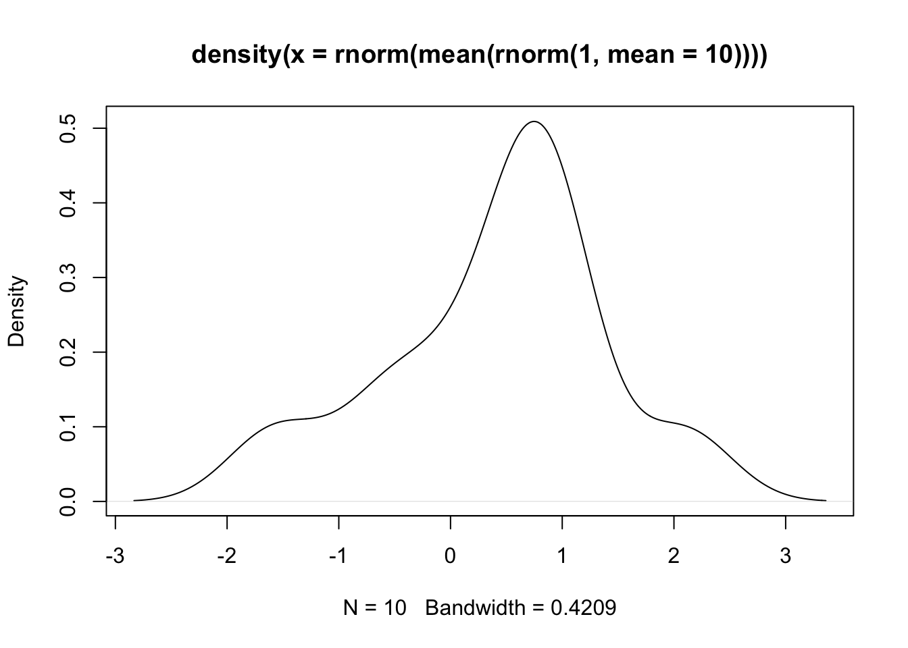
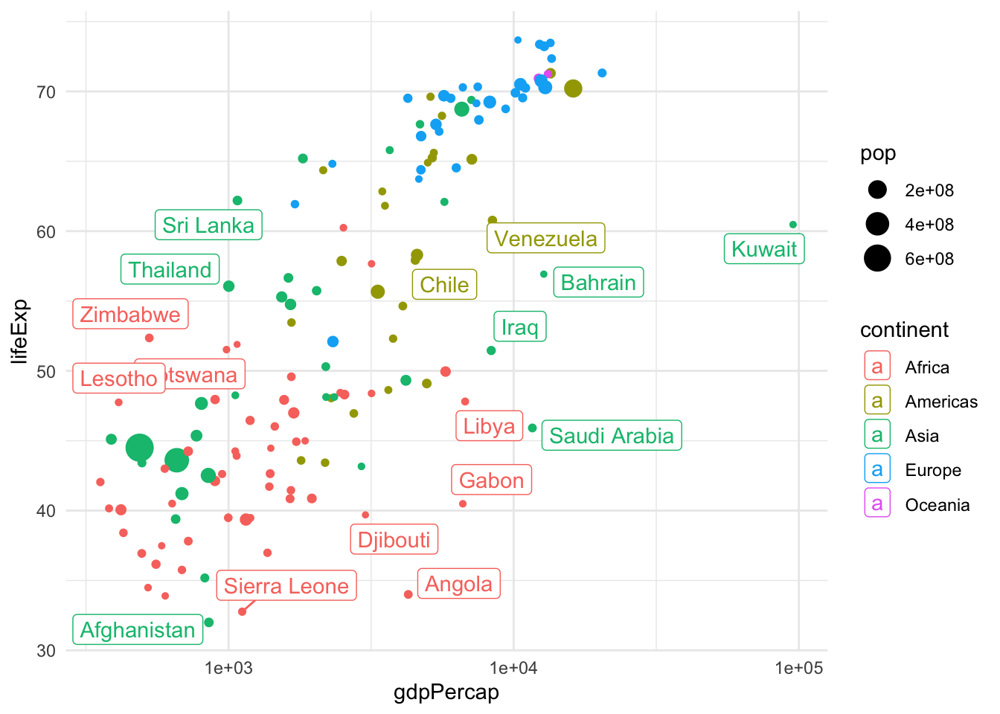

install.packages("gapminder")2 Data Visualization
2.1 Lecture Slides
2.2 Lab: data wrangling and visualization
2.2.1 What’s not covered (i.e., prerequisites)
Basic R syntax is not covered in this lab, as we assume that you are already familiar with it. Most of the concepts in this first lab should be accessible to peolple with minimal exposure to R (Googling what you don’t remember is allowed – and encouraged!).
If you need help getting started with R, this is a good and free tutorial: https://swcarpentry.github.io/r-novice-gapminder/
2.2.2 What’s covered (i.e., outline)
In this first lab, we will cover how to:
- how to transform, group, and summarize tidy data with the
dplyrpackage - how to plot tidy data with the
ggplot2package
Note that this process is sometimes referred to as data wrangling (or data munging). To do this we will make extensive use of the dplyr package.
This is not a complete tutorial of the dplyr package. Rather, it’s an introduction of the dplyr syntax.
2.2.3 Data wrangling: the dplyr package
An important and often time consuming step of any data analysis is “data wrangling,” or the process of cleaning up the dataset. This process is often required before any meaningful data exploration can be carried out.
Although it is possible to plot, analyze and even make inference with messy datasets, you will make your life much easier by cleaning and “tidying” your data as a preliminary step and by saving a cleaned dataset as the starting point of the downstream analyses can save you quite some time in the long run.
This often requires removing, adding, transforming variables, as well as filtering, grouping, and ordering observations. Data summary is also often included in the data wrangling definition.
Although base R has all the tools needed to perform these operations, the dplyr add-on package has a nice and concise set of operations that make it easier to perform the typical operations needed at this step.
2.2.4 An example dataset: the gapminder package
To illustrate the concepts in this lab, we will use the gapminder package, which includes a subset of the Gapminder dataset with data on 142 countries per capita GDP (Gross Domestic Product) and life expectancy between 1952 and 2007.
The package is available on CRAN and can be downloaded with the following.
This is the way to install packages in R. For this lab we will need the dplyr, tidyr, magrittr, and ggplot2 packages. Although we can install these packages independently, a convenient alternative is to install the tidyverse package.
install.packages("tidyverse")You will need to install the packages only once, but the packages need to be loaded into R at every new session.
library(tidyverse)
library(gapminder)After loading the package, we can have a look at the dataset.
gapminder# A tibble: 1,704 × 6
country continent year lifeExp pop gdpPercap
<fct> <fct> <int> <dbl> <int> <dbl>
1 Afghanistan Asia 1952 28.8 8425333 779.
2 Afghanistan Asia 1957 30.3 9240934 821.
3 Afghanistan Asia 1962 32.0 10267083 853.
4 Afghanistan Asia 1967 34.0 11537966 836.
5 Afghanistan Asia 1972 36.1 13079460 740.
6 Afghanistan Asia 1977 38.4 14880372 786.
7 Afghanistan Asia 1982 39.9 12881816 978.
8 Afghanistan Asia 1987 40.8 13867957 852.
9 Afghanistan Asia 1992 41.7 16317921 649.
10 Afghanistan Asia 1997 41.8 22227415 635.
# ℹ 1,694 more rowsNote that this is a tibble, which is a fancy extension of a data.frame.
class(gapminder)[1] "tbl_df" "tbl" "data.frame"Other than having a better method to print to screen, a tibble is a data.frame and in this course we will use the term data.frame whether the object is a tibble or a data.frame.
2.2.5 The “pipe” operator
Before discussing the main “verbs” available in the dplyr package, we introduce the “pipe” operator. The pipe operator, |>, essentially takes the output of the left-hand side expression and turns it into the first argument of the right-hand side function.
Let’s consider an example. Assume that we want to know the sum of the first 100 natural numbers. We can first create a vector with the numbers, saving it into a variable, and then compute the sum.
x <- 1:100
sum(x)[1] 5050Alternatively, we can generate the vector and directly call the function by nesting the two expressions.
sum(1:100)[1] 5050The pipe operator gives yet another alternative.
1:100 |> sum()[1] 5050Although this syntax may seem overly complicated for such small examples, it’s extremely useful when many functions are applied in a sequential way, to avoid the nesting of functions that may create hard to read code.
## nested functions
plot(density(rnorm(mean(rnorm(1, mean=10)))))
## pipe
rnorm(1, mean=10) |>
mean() |>
rnorm() |>
density() |>
plot()
2.2.6 dplyr verbs
The five key functions of the dplyr package are the following.
select(): to select variables, or columns of the data frame.filter(): to select obserations, or rows of the data frame.arrange(): to order the observations.mutate(): to modify a variable or create a new one.summarize(): to summarize the values of a variable.
Another important function is group_by(), which changes the behavior of the other five functions to operate at the group level rather than on the full dataset.
We will illustrate the five verbs by trying to answer a few interesting questions with the gapminder dataset:
- What were the 5 richest countries in Europe in 1997?
- What was the total GDP of Japan in 1962?
- What was the average life expectancy for each continent in 2007?
- How did the average life expectancy of each continent change each year between 1962 and 1997?
2.2.6.1 Five richest European countries in 1997
To answer this question we need to:
- Select the observations corresponding to European countries in the year 1997;
- select the variables related to gdp and country;
- order the countries by gdp.
gapminder |>
filter(continent == "Europe") |>
filter(year == 1997) |>
dplyr::select(country, gdpPercap) |>
arrange(desc(gdpPercap)) |>
head(n=5)# A tibble: 5 × 2
country gdpPercap
<fct> <dbl>
1 Norway 41283.
2 Switzerland 32135.
3 Netherlands 30246.
4 Denmark 29804.
5 Austria 29096.2.2.6.2 Total GDP of Japan in 1962
To answer this question we need to:
- Select the observations corresponding to Japan in the year 1962;
- multiply per capita GDP by total population.
gapminder |>
filter(country == "Japan" & year == 1962) |>
mutate(totalGDP = gdpPercap * pop) |>
pull(totalGDP)[1] 6302518730212.2.6.3 Average life expectancy for each continent in 2007
To answer this question we need to:
- Select the observations corresponding to the year 2007;
- group the data by continent;
- compute the average.
gapminder |>
filter(year == 2007) |>
group_by(continent) |>
summarize(averageExp = mean(lifeExp))# A tibble: 5 × 2
continent averageExp
<fct> <dbl>
1 Africa 54.8
2 Americas 73.6
3 Asia 70.7
4 Europe 77.6
5 Oceania 80.72.2.6.4 Life expectancy per continent 1962-1997
gapminder |>
filter(year >= 1962 & year <= 1997) |>
group_by(continent, year) |>
summarize(averageExp = mean(lifeExp))# A tibble: 40 × 3
# Groups: continent [5]
continent year averageExp
<fct> <int> <dbl>
1 Africa 1962 43.3
2 Africa 1967 45.3
3 Africa 1972 47.5
4 Africa 1977 49.6
5 Africa 1982 51.6
6 Africa 1987 53.3
7 Africa 1992 53.6
8 Africa 1997 53.6
9 Americas 1962 58.4
10 Americas 1967 60.4
# ℹ 30 more rowsThis is too much information to see on the screen. We will see in the next session how to visualize the data in a plot.
Some other useful functions defined in the dplyr package are the following.
slice: select rows by position.case_whenandifelsefor conditional operators.transmute: a mutate that drops existing variables.do: perform arbitrary operations.
2.2.7 Plotting tidy data: the ggplot2 package
Although base R has a plotting system, there are addon packages that define other plotting functions. One of them is the ggplot2 package. ggplot2 defines a “grammar of graphics” as a consistent way to create very different plots.
In my real analysis I use a mix of base graphics and ggplot2 as I find that both systems have pros and cons and each is more appropriate for certain types of data and/or plots. Here, we assume that you are already familiar with base graphics, or that you can learn it on your own, and we focus on ggplot2.
Let’s start from the last example of the previous section. We want to explore the trends in life expectancy for each continent over the years. We can use group_by and summarize to compute the average life expectancy per each continent between 1962 and 2007. But how can we visualize it? Here is where the ggplot2 package comes into play.
gapminder |>
group_by(continent, year) |>
summarize(averageExp = mean(lifeExp)) |>
ggplot(aes(x = year, y = averageExp, group=continent,
color=continent)) +
geom_line()The ggplot function has two main arguments:
- a dataset that contains the data (in the example above passed with the pipe operator);
- an “aesthetic mapping” created by the
aes()function.
Note that in addition to specifying the x and y axis, we also specified a grouping variable and a variable that defines the color of the lines.
Here, we plotted the data for the continent in the same plot with different colors. This is fine when plotting a few lines, but what if we wanted to plot the data for each country rather than each continent? A simple modification to our code let us do just that.
theme_set(theme_minimal())
gapminder |>
ggplot(aes(x = year, y = lifeExp, group=country,
color=continent)) +
geom_line()This is not great because of overplotting. In this situations, a popular device is the use of facets.
gapminder |>
ggplot(aes(x = year, y = lifeExp, group=country,
color=continent)) +
geom_line() +
facet_wrap(~continent, nrow = 2)This plot can be further improved by plotting only the average curve and the range for each continent.
gapminder |>
group_by(continent, year) |>
summarize(averageExp = mean(lifeExp),
minExp = min(lifeExp),
maxExp = max(lifeExp)) |>
ggplot(aes(x = year, y = averageExp, group=continent,
fill=continent)) +
geom_ribbon(aes(ymin = minExp, ymax = maxExp, alpha = 0.5)) +
geom_line() + theme(legend.position="none") +
facet_wrap(~continent, nrow = 2)Let’s say that we are interested in the relation between life expectancy and GDP. Let’s have a look at the first available year, 1962. The best way to visualize the data to answer this question is with a scatterplot, available in ggplot2 via the geom_point.
gapminder |>
filter(year == 1962) |>
ggplot(aes(x = gdpPercap, y = lifeExp)) +
geom_point()
This is not a very satisfying plot. The data looks better if we plot the x axis on the log scale.
gapminder |>
filter(year == 1962) |>
ggplot(aes(x = gdpPercap, y = lifeExp)) +
geom_point() + scale_x_log10()To extract more information from this analysis, we can also color the points by continent and have the size of the point proportional to the country’s population.
gapminder |>
filter(year == 1962) |>
ggplot(aes(x = gdpPercap, y = lifeExp, color=continent, size=pop)) +
geom_point() + scale_x_log10()Analogously, we can change the shape and transparency of the points with the parameters shape and alpha.
Here we have seen three geometries, the line, the point, and the “ribbon”. Other useful geometries are geom_boxplot, geom_histogram, geom_density, etc. See the cheat sheet for all the geometries.
The last version of the plot is very close to an optimal representation of the data. This graphical summary raises some interesting questions, e.g., what is the country that sits by itself on the right-hand side of the plot? This is by far the richest country per capita, but its life expectancy is not very high.
One solution is to add labels.
library(ggrepel)
gapminder |>
filter(year == 1962) |>
ggplot(aes(x = gdpPercap, y = lifeExp, color=continent, label=country)) +
geom_point(aes(size = pop)) +
geom_label_repel() + scale_x_log10()
This is a great plot for 1962, but how do things change across the years? We could use facets to display a few years, but if we are going to explore all years, we need a dynamic plot.
library(gganimate)
gap <- ggplot(gapminder, aes(gdpPercap, lifeExp, size = pop, colour = country)) +
geom_point(alpha = 0.7, show.legend = FALSE) +
scale_colour_manual(values = country_colors) +
scale_size(range = c(2, 12)) +
scale_x_log10() +
facet_wrap(~continent, ncol = 5) +
# animate it!
labs(title = 'Year: {frame_time}', x = 'GDP per capita', y = 'life expectancy') +
transition_time(year) +
theme_bw()
gap
2.3 Further reading
- Claus O. Wilke. Fundamentals of Data Visualization
- S. Holmes and W. Huber. Modern Statistics for Modern Biology. Chapter 3
- Carrie Wright, Shannon E. Ellis, Stephanie C. Hicks and Roger D. Peng Tidyverse Skills for Data Science